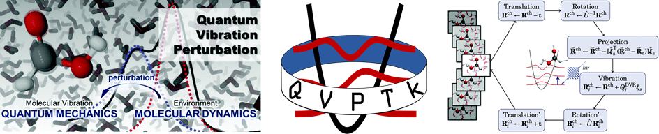

高加力研究组 李辉研究组
量子振动微扰方法
一种准确考虑原子核运动量子效应的光谱模拟方法

蛋白质构象由不同的构型异构体组成。配体结合和催化过程本身能显著改变蛋白质构象状态和分布。深入理解蛋白质构象转换机理，对揭示酶生化功能发挥重要作用。在蛋白质特定位置置入振动探针分子，获取蛋白质局部静电场的详细信息，能帮助表征、识别蛋白质的构象异构态。本项目拟发展理论计算方法，精确模拟含探针基团的生物酶或多肽在水溶液中的一、二维振动光谱。目的是了解酶催化反应路径中的动态构象变化和底物-蛋白复合物中的构象异构态。为了实现上述目标，我们通过分子动力学取样，应用QM/MM方法确定探针与溶剂分子间的相互作用势能和偶极矩，应用微扰理论有效确定含时动力学轨迹中的瞬时跃迁频率和跃迁偶极矩，模拟体系在时域或频域的一、二维振动光谱。该项目汇集两位在生物、光谱领域内各具特色的专家组成团队，形成了良好交叉和融合，在生物光谱学领域找到了新的生长点。发展的新方法将不仅适用于该项目特定体系，还可广泛应用于化学生物体系。
本项目由国家自然科学基金重点项目“振动光谱解析生物分子结构和动力学（21533003）”支持。
探针分子局域振动模式红外光谱的微扰计算方法
通过特定位点探针分子的线性和二维红外光谱，人们可以从分子层面了解凝聚相和生物系统中的局部氢键网络、构象动力学和长程静电相互作用。而为了准确的计算探针分子随时间变化的振动频率，在计算方法里需要显式包含振动运动的核量子效应，并且用量子化学计算振动势能函数。我们提出了核的量子振动扰动（QVP）方法，在分子动力学模拟中有效确定生色分子的瞬时振动频率。我们组合使用振动波函数的离散变量表示和微扰理论来评估溶剂动态波动引起的振动能量偏移，以及系统的QM/MM模拟来平衡计算的准确度和效率。研究发现，一阶微扰理论是足够准确的，这使分子动力学中随时间变化的振动频率可以随模拟实时获得。QVP方法在氯化氢-水簇中H-Cl伸缩频率和丙酮在水溶液中的羰基伸缩振动的特定模式线性和二维红外光谱中得到了验证。为了进一步降低计算成本，我们采用了杂化方法。研究发现，计算出的振动谱峰位置和线型与实验结果一致。此外，还发现在H-Cl拉伸模式下，非谐性很明显，而且氢键相互作用进一步增强了非谐波效应。QVP弥补了包括基于路径积分的分子动力学和静电映射方法的不足之处。
Xue, Grofe, Yin, Qu, Gao, and Li
J. Chem. Theory Comput.
13, 191–201 (2017)
doi:10.1021/acs.jctc.6b00733
乳酸脱氢酶的活性位点异质性
我们对人体心脏乳酸脱氢酶 (LDH)
进行了分子动力学模拟，并利用量子振动微扰理论以确定四聚体酶中丙酮酸羰基伸缩振动的线性和二维傅里叶变换红外
(2D-FTIR)
光谱。计算得到的单个亚基的线形不均匀地变宽，并跨越了整个酶的羰基振动的整个吸收范围，表明
LDH
的四个活性位点具有相似的构象异质性。然而，由于不同亚基中构象平衡的变化，每个亚基线形具有不同的宽度和峰值最大值，对应于实验观察到的光谱多重峰。由于在给定的活性位点将底物转化为产物之前存在有限的时间间隔，因此Michaelis complex的这种时间粗粒度平均值的分布称为活性位点异质性。活性位点异质性与构象异质性的区别在于，尽管前者受相同的能量景观控制，导致构象异质性，但随机酶底物加合物只能采样构象空间的一小部分，受酶周转的限制并显示为单酶实验中等待时间的分布（即反应速率）。本研究表明，通过实验观察和计算再现的
Michaelis complex的 C=O
伸缩区域中的不同吸收峰是由于活性位点的异质性，作为不同活性位点的光谱线形的叠加。因此，与这些
LDH
光谱峰相对应的子状态不会相互转换，并且它们具有不同的反应速率，如实验所发现的。目前的活性位点异质性机制与同位素编辑红外和温度跳跃弛豫光谱的动力学模型完全一致。
Yin, Li, Grofe, and Gao
ACS Catal. 9, 4236–4246
(2022)
doi:10.1021/acscatal.9b00821
模拟多原子探针红外光谱的量子振动微扰方法
溶液中生色团分子的振动光谱的定量预测具有挑战性，且研究者们已经开发了多种方法。在本工作中，我们提出了一种量子振动微扰 (QVP)
方法，这是一个将分子量子振动和分子动力学与微扰理论相结合的过程。在此框架中，进行牛顿分子动力学模拟获取分子轨迹，然后进行替换过程以将分子量子振动波函数嵌入到轨迹中。使用
Rayleigh–Schrödinger
微扰理论计算每个时间步的瞬时振动频率位移，其中微扰算子是参考生色团和环境中受扰动的生色团之间的振动势差。采用半经典统计力学来获得光谱线形。我们以
HCOOH·nH2O (n = 1-2) 团簇和 HCOOH
水溶液为例验证了我们的方法。QVP方法可用于快速预测溶液中特定振动模式的振动光谱。
Cong, Zhai, Yang, Grofe, Gao, and Li
Phys. Chem. Chem. Phys.
24, 1174-1182 (2022)
doi:10.1039/D1CP04490G